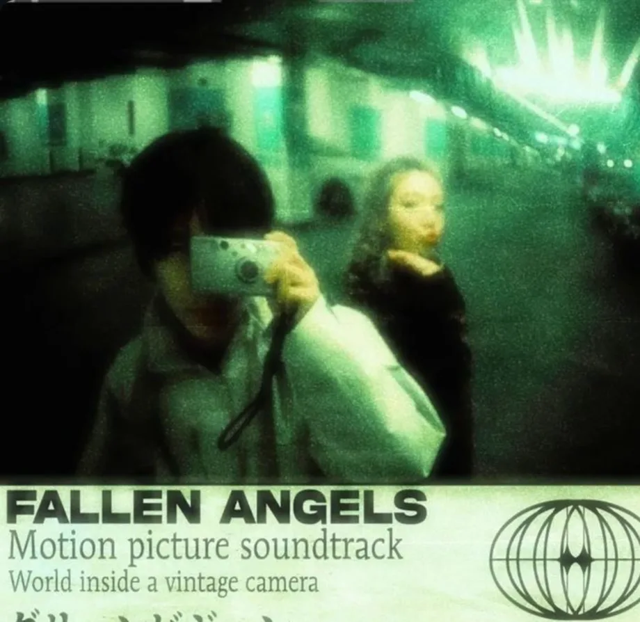
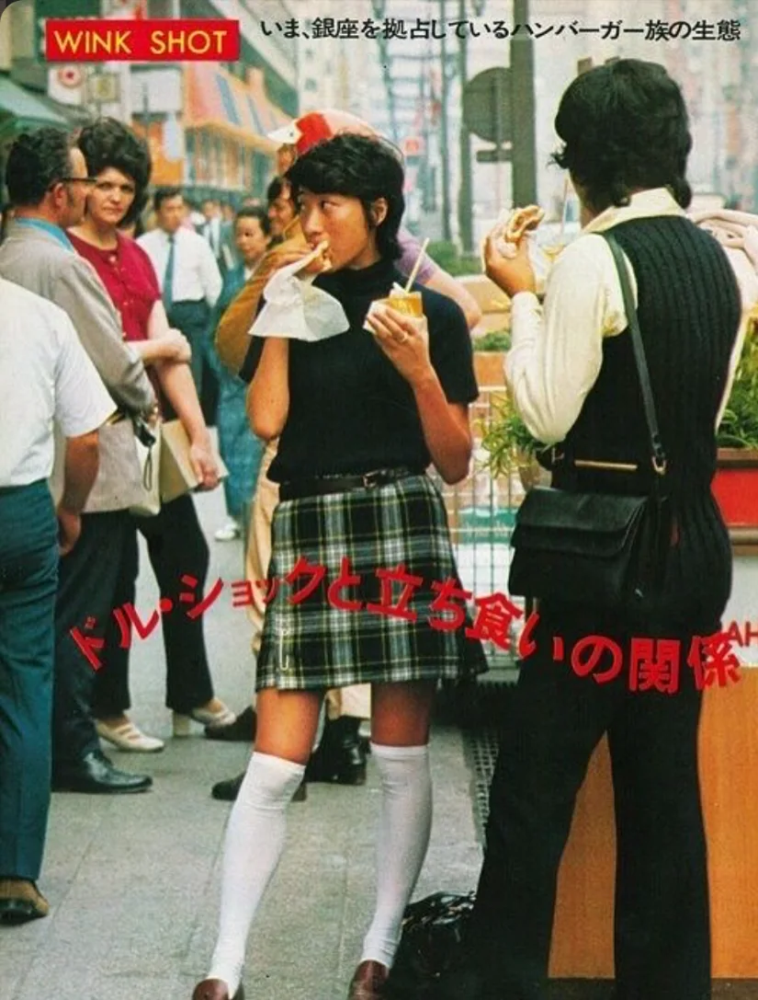
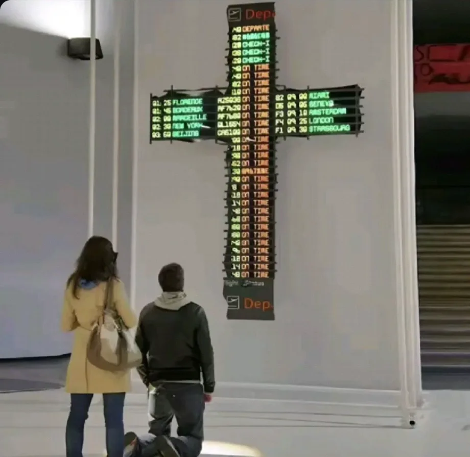
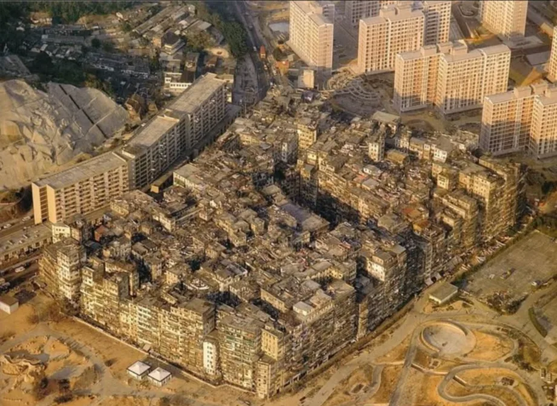

Fallen Angels and the City After Dark
Wide lenses, neon light and all-night shops. How Wong Kar-wai makes a crowded city feel lonely.
A soundtrack for urban optimism in Japan found a second life on YouTube. How did “Plastic Love” become a way to miss an era you never lived through?

Three ways in, through a film frame, a work of art or an aerial photograph. Each opens the original Infovore post.

Wide lenses, neon light and all-night shops. How Wong Kar-wai makes a crowded city feel lonely.

Circuit-board crucifixes and wired sacred hearts. The artworks that offer a way into an online aesthetic where faith meets technology.

What was daily life like in a neighbourhood so densely built that sunlight rarely reached street level?
Find a story by subject, then see where it leads.
Infovore is an independent online gallery and digital culture publication. A painting, a film still or an internet aesthetic can all be a way in. We look closely at what we find, trace where it came from and follow what it connects to.